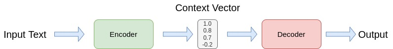
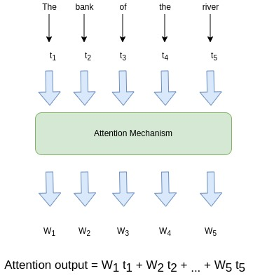
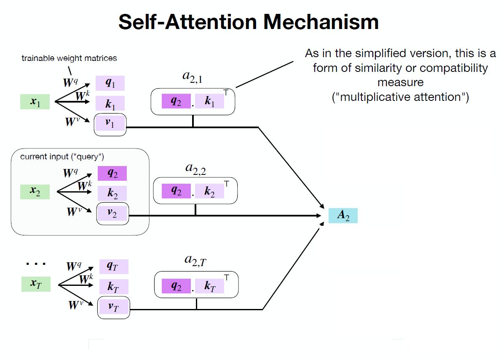
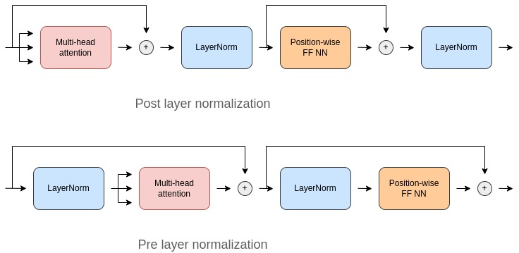

Code
import torch
import torch.nn as nnIt is a fact that Convolutional Neural Networks(CNN) have been dominant in Computer Vision tasks. However, ViT - AN IMAGE IS WORTH 16X16 WORDS: TRANSFORMERS FOR IMAGE RECOGNITION AT SCALE paper showed great results compared to SotA models. Here, we will dive deep enough to understand the Transformers architecure and in the next blogpost apply the model to some practical tasks. First, let’s start from the beginning - Encoder-Decoder Framework.
Encoder-decoder framework is used for sequence-to-sequence tasks, for example, machine translation.

The simplest model consists of two RNNs: one for the encoder and another for the decoder. Encoder reads the source sentence and produces a context vector where all the information about the source sentence is encoded. Then, decoder reads the context vector and generates output sentence based on this vector. The problem with such a model is that encoder tries to compress the whole source sentence into a fixed size vector. This can be hard, especially with long text inputs. It cannot put all information into a single vector without loosing some meaning.
Imagine explaining a topic with few words. Only hope is the other person understands it as you want.
Attention was introduced to overcome the shortcomings of the fixed vector representation problem. At each decoder step, it decides which source parts are more important. The encoder does not compress the whole input into a single vector - it gives context for all input tokens.
 > Image from {% cite voita2020nlpCourse %}
> Image from {% cite voita2020nlpCourse %}
The mechanism is as follows: 1. Attention mechanism takes all encoder states and one decoder state as input 2. Gives a score to the input (computes weights) 3. Output from 2 are normalized using softmax function. 4. Outputs weighted sum.

But, how the score is calculated? The simplest method is dot product of encoder states and a decoder state. Other methods are bilinear function and multi-layer perceptron which was proposed in the original paper. The main purpose of calculating the score is identifying similarity between the current input and all other inputs.
Transformer model was introduced in the paper Attention is All You Need in 2017. It uses only attention mechanisms: without RNN or CNN. It has become a go to model for not only sequence-to-sequence tasks but also for other tasks. Let me show you a demonstration of Transformer from Google AI blog post.

Let’s take the sentence “The bank of the river.” as an example. The word “bank” might confuse RNN as it processes the sentence sequentially and does not know whether the “bank” represents financial institution or the edge of the river untill the model reaches the end of the sentence. Unlike RNN, Transformer knows the context without reading the whole sentence as it’s encoder tokens interact each other and give context to the words. In the above example, it is clear that at each step tokens exchange information and try to understand each other better.
The main part of the model is self-attention mechanism. The difference between self-attention and simplified attention is the prior has trainable weights.
\[query = W^qx_i\newline key = W^kx_i\newline value = W^vx_i\]
 > Image from here
As shown in the example above, we calculate query, key and value for every input token. Output of self-attention is calculated like simplified attention with slight differences:
\[Attention(q,k,v) = softmax(score)v\newline\] Here \[score = \frac{qk^T}{\sqrt{d_k}}\]
The reason why we are using scaled dot-product in attention score is to ensure that the dot-products between query and key do not grow too large for large \(d_k\).
This is the last step to understand the Transformer model.

If we recall that
\[Attention(q,k,v) = softmax(\frac{qk^T}{\sqrt{d_k}})v\newline\] , it computes only one head. In order to turn that into a Multi-Head Attention, surprise, surprise, we stack h number of such heads with different \(W^q, W^k, W^v\) and concatenate them.
The reason why the model has multiple heads is that one head focus only on one aspect of similarity. Thus, multiple heads allows the model to focus on several aspects at once. Finally, here is the Transformer architecture:

As shown in the figure above, the Transformer model consists of Multi-Head Attention and MLP (Feed Forward) blocks. In addition, Layer Norm is used before every block and residual connections like in ResNet after every block.

Architecture above is Vision Transformer model architecrue from the original paper. As it is seen, we split the input image into a fixed sized pieces(patches). It is because of the Transformer architecture. It accepts input as a sequence. The overall steps how the model works are as follows: 1. Split an input image into patches(pieces). 2. Linearly embed each of the patches. 3. Add position embeddings 4. Feed the resulting sequence of vectors to standard Transformer Encoder and get the output for each of [cls] tokens. 5. Pass the representation of [cls] tokens through an MLP Head to get final class predictions.
Now, we will take a closer look at each one of the steps with code.
All PyTorch code is taken from here
import torch
import torch.nn as nnclass PatchEmbed(nn.Module):
"""
Split image into patches and embed them.
Parameters
----------
img_size: Size of the image
patch_size: Size of the path
in_chans: Number of input channels
embed_dim: The embedding dimension
Attributes
----------
n_patches: int
Number of patches inside of our image.
proj: nn.Conv2D
Convolutional layer that does both the splitting into patches and teir embedding.
"""
def __init__(self, img_size: int, path_size: int, in_chans: int = 3, embed_dim: int = 768):
super().__init__()
self.img_size = img_size
self.patch_size = patch_size
self.n_patches = (img_size // patch_size) ** 2
self.proj = nn.Conv2d(
in_chans,
embed_dim,
kernel_size=patch_size,
stride=patch_size,
)
def forward(self, x: torch.Tensor) -> torch.Tensor:
""" Forward pass
Parameters
----------
x: Shape
"""
x = self.proj(
x
)
x = x.flatten(2)
x = x.transpose(1, 2)
return x
We will start with the 1st and 2nd step combined. Insted of dividing an input image into patches and then doing Linear Projection step, we combine them with the help of Convolution. The module accepts image size, patch size (originally 16x16), channels (1 - if it is graysclae, 3 - if it is RGB) and embedding dimension (stays constant across the entire network). Pay attention to Convolution operation - we set the kernel_size and stride equal to path_size. This way, the kernel exactly fall into the patches without overlapping. This way we get Patch Embeddings.
class Attention(nn.Module):
"""Attention mechanism.
Parameters
----------
dim: The input and output dimension of per token features.
n_heads: Number of attention heads
qkv_bias: If True then we include bias to the query, key and value projections.
attn_p: Dropout probability applied to the query, key and value tensors.
proj_p: Dropout probability applied to the output tensor
Attributes
----------
scale: Normalizing for the dot product
qkv: Linear projection for the query, key and value.
proj: Linear mapping that takes in the concatenated output of all attention heads and maps it into a new space.
attn_drop, proj_drop: Droput layers.
"""
def __init__(self, dim: int, n_heads: int = 12, qkv_bias: bool = True, attn_p: float = 0.2, proj_p: float = 0.2):
super().__init__()
self.n_heads = n_heads
self.dim = dim
self.head_dim = dim // n_heads
self.scale = self.head_dim ** -0.5
self.qkv = nn.Linear(dim, dim * 3, bias=qkv_bias)
self.attn_drop = nn.Linear(dim, dim)
self.proj_drop = nn.Dropout(proj_p)
def forward(self, x: torch.Tensor) -> torch.Tensor:
"""Run forward pass.
Parameters
----------
x : Shape (n_samples, n_patches + 1, dim).
"""
n_samples, n_tokens, dim = x.shape
qkv = self.qkv(x)
qkv = qkv.reshape(
n_samples, n_tokens, 3, self.n_heads, self.head_dim
)
qkv = qkv.permute(
2, 0, 3, 1, 4
)
q, k, v = qkv[0], qkv[1], qkv[2]
k_t = k.transpose(-2, -1)
dp = (
q @ k_t
) * self.scale
attn = dp.softmax(dim=-1)
attn = self.attn_drop(attn)
weighted_avg = attn @ v
weighted_avg = weighted_avg.transpose(
1, 2
)
weighted_avg = weighted_avg.flatten(2)
x = self.proj(weighted_avg)
x = self.proj_drop(x)
return xThe above code does 4 things: 1. Project each patch embedding into three vectors called query, key and value. 2. Compute attention scores using dot-product. Queries and keys that are similar will have a large dot product. 3. Compute attention weights. Dot products can generate large numbers, which can destabilize the training process. To handle this, the attention scores are first multiplied by a scaling vector and then normalized with a softmax to ensure all the column values add up to 1. 4. Update the embeddings by multiplying them with the value vector.
class MLP(nn.Module):
"""Multilayer perceptron.
Parameters
----------
in_features : Number of input features.
hidden_features : Number of nodes in the hidden layer.
out_features : Number of output features.
p : Dropout probability.
Attributes
----------
fc : nn.Linear
The First linear layer.
act : nn.GELU
GELU activation function.
fc2 : nn.Linear
The second linear layer.
drop : nn.Dropout
Dropout layer.
"""
def __init__(self, in_features: int, hidden_features: int, out_features: int, p: float = 0.2):
super().__init__()
self.fc1 = nn.Linear(in_features, hidden_features)
self.act = nn.GELU()
self.fc2 = nn.Linear(hidden_features, out_features)
self.drop = nn.Dropout(p)
def forward(self, x: torch.Tensor) -> torch.Tensor:
"""Run forward pass.
Parameters
----------
x : Shape
Returns
-------
Shape
"""
x = self.fc1(
x
)
x = self.act(x)
x = self.drop(x)
x = self.fc2(x)
x = self.drop(x)
return xThere is nothing extraordinary in the above code except GELU activation function. This is classification part consisting of just two fully connected layers.
class Block(nn.Module):
"""Transformer block.
Parameters
----------
dim : Embeddinig dimension.
n_heads : Number of attention heads.
mlp_ratio : Determines the hidden dimension size of the `MLP` module with respect
to `dim`.
qkv_bias : If True then we include bias to the query, key and value projections.
p, attn_p : Dropout probability.
Attributes
----------
norm1, norm2 : LayerNorm
Layer normalization.
attn : Attention
Attention module.
mlp : MLP
MLP module.
"""
def __init__(self, dim: int, n_heads: int, mlp_ratio:float = 4.0, qkv_bias: bool = True, p: float = 0., attn_p: float = 0.):
super().__init__()
self.norm1 = nn.LayerNorm(dim, eps=1e-6)
self.attn = Attention(
dim,
n_heads=n_heads,
qkv_bias=qkv_bias,
attn_p=attn_p,
proj_p=p
)
self.norm2 = nn.LayerNorm(dim, eps=1e-6)
hidden_features = int(dim * mlp_ratio)
self.mlp = MLP(
in_features=dim,
hidden_features=hidden_features,
out_features=dim,
)
def forward(self, x: torch.Tensor) -> torch.Tensor:
"""Run forward pass.
Parameters
----------
x : Shape.
"""
x = x + self.attn(self.norm1(x))
x = x + self.mlp(self.norm2(x))
return xIn ViT authors used only one block (Encoder block). Original paper uses post layer normalization arrangement when normalization layer is placed in between the skip connections. However, it is hard to train from scratch and therefore the code above uses pre layer normalization arrangement. 
class VisionTransformer(nn.Module):
"""Simplified implementation of the Vision transformer.
Parameters
----------
img_size : Both height and the width of the image (it is a square).
patch_size : Both height and the width of the patch (it is a square).
in_chans : Number of input channels.
n_classes : Number of classes.
embed_dim : Dimensionality of the token/patch embeddings.
depth : Number of blocks.
n_heads : Number of attention heads.
mlp_ratio : Determines the hidden dimension of the `MLP` module.
qkv_bias : If True then we include bias to the query, key and value projections.
p, attn_p : Dropout probability.
Attributes
----------
patch_embed : PatchEmbed
Instance of `PatchEmbed` layer.
cls_token : nn.Parameter
Learnable parameter that will represent the first token in the sequence.
It has `embed_dim` elements.
pos_emb : nn.Parameter
Positional embedding of the cls token + all the patches.
It has `(n_patches + 1) * embed_dim` elements.
pos_drop : nn.Dropout
Dropout layer.
blocks : nn.ModuleList
List of `Block` modules.
norm : nn.LayerNorm
Layer normalization.
"""
def __init__(
self,
img_size: int = 384,
patch_size: int = 16,
in_chans: int = 3,
n_classes: int = 1000,
embed_dim: int = 768,
depth: int = 12,
n_heads: int = 12,
mlp_ratio: int = 4.,
qkv_bias: int = True,
p: int = 0.2,
attn_p: int = 0.2,
):
super().__init__()
self.patch_embed = PatchEmbed(
img_size=img_size,
patch_size=patch_size,
in_chans=in_chans,
embed_dim=embed_dim,
)
self.cls_token = nn.Parameter(torch.zeros(1, 1, embed_dim))
self.pos_embed = nn.Parameter(
torch.zeros(1, 1 + self.patch_embed.n_patches, embed_dim)
)
self.pos_drop = nn.Dropout(p=p)
self.blocks = nn.ModuleList(
[
Block(
dim=embed_dim,
n_heads=n_heads,
mlp_ratio=mlp_ratio,
qkv_bias=qkv_bias,
p=p,
attn_p=attn_p,
)
for _ in range(depth)
]
)
self.norm = nn.LayerNorm(embed_dim, eps=1e-6)
self.head = nn.Linear(embed_dim, n_classes)
def forward(self, x: torch.Tensor) -> torch.Tensor:
"""Run the forward pass.
Parameters
----------
x : Shape `(n_samples, in_chans, img_size, img_size)`.
Returns
-------
logits : Logits over all the classes - `(n_samples, n_classes)`.
"""
n_samples = x.shape[0]
x = self.patch_embed(x)
cls_token = self.cls_token.expand(
n_samples, -1, -1
)
x = torch.cat((cls_token, x), dim=1)
x = x + self.pos_embed
x = self.pos_drop(x)
for block in self.blocks:
x = block(x)
x = self.norm(x)
cls_token_final = x[:, 0] # just the CLS token
x = self.head(cls_token_final)
return xFinally, it is time to assemble all the code blocks into one module to create Vision Transformer model. The code incorporates positional embedding and a [cls] token into the model and then add all other modules.
In this blog post we covered all about Transformer architecture, starting from encoder-decoder framework to application of Transformer architecture in Computer Vision. In the next post, we will apply the model in a classification task.
{% bibliography –cited %}